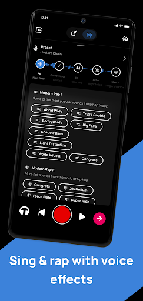

Voloco 坑点复盘：从订阅失踪到导出翻车，我踩过的六个雷
免费版一层轨、订阅检测不生效、分轨导出烧进修音……Voloco 看着简单，用起来几个暗坑藏得深。这篇把我踩过的雷一个个拆开说清。
Voloco 给人的第一印象是「哇，手机上也能修音」——它的官网明确定位就是"口袋里的人声工作站"，点开就能唱，挂上预设立刻有 studio 感。但我用了几个月，从免费版一路折腾到 Premium，中间踩了好几个让我想摔手机的坑。不是应用本身烂，是它的设计有几处和直觉反着来，不提前知道的话，轻则白花十分钟返工，重则订阅白买、分轨废掉。
下面把我遇到的坑按"出现频率"排——订阅相关的我身边至少三个人踩过，排第一。
坑一：刚付的订阅，应用里还显示免费版
症状：Google Play 或 App Store 里明明已经扣款成功、订单状态也正常，回到 Voloco 打开还是"升级 Premium"按钮，八轨用不了、WAV 导出也灰着。我第一次遇到时以为要重装，删了又装还是老样子，急得在客服框里戳了五分钟。
原因：Voloco 的订阅不是自己管的，它完全依赖应用商店的授权回执。商店那边的支付处理有延迟（尤其是首次内购或换绑过支付方式的账号），或者你手机上登了不止一个商店账号——付款用的是 A 账号，应用读的是 B 账号的授权，这就对不上了。我那次就是 Android 上 Google Play 有两个账号，默认账号不是付款那个。
解法：别重装，先找应用里的「恢复购买」入口。点一下，用付款的那个商店账号确认登录，十秒内就能拉到授权。如果还不行，进商店确认两桩事：支付是否显示"已完成"而非"处理中"；当前登录账号和付款账号是不是同一个。这两步排完基本就好。

坑二：分轨导出来的 stem，修音和混响全烧进去了
症状：我按Voloco文档里说的"逐轨静音法"一条条导 stem，发给混音的朋友后他问我："你这声还让我怎么混？修音全焊死在文件里了。"我以为分轨导出会自动 strip 效果，结果不是。
原因：Voloco 的分轨导出逻辑很朴素——它把这条轨道当前听到的样子直接烧进文件。你挂的 Auto-Tune、Compressor、Room Reverb 全都会写进 stem。文档里其实提了一句"带"，但我当时没细看。如果你想给制作人干净的干声（dry stem），得先把这条轨的效果链全部关掉，再导出。
解法：导出前，进每条轨的效果面板，把修音和混响 preset 暂时存一份（点 save），然后把效果链清空——挂一个空 preset 也行。导出完再把原 preset 挂回去。八条轨就是八轮操作，但比导出来废掉重录强。另外格式务必选 WAV，MP3 压缩过的 stem 进混音根本救不回来。
坑三：换手机迁移，工程跟着丢
症状：旧手机录的项目，在新手机上登录同一账号，打开 Voloco 一看——空的。我攒了半个月的多轨工程全没了，当时差点原地去世。
原因：Voloco 本地存储为主，云端同步不是默认开启的，而且免费版根本没这功能。我之前不知道这事，旧手机恢复出厂设置前也没主动导出过。Premium 版虽然有云同步，但也是"项目级"的，效果 preset 和混音快照不会跟着走。
解法：有 Premium 的，把自动云同步开起来（项目设置里）。不管有没有付费，每完成一个项目就导出一份 WAV 或 MP3 到本地文件，别指望应用存一辈子。跨设备迁移最稳妥的办法是：旧手机导出 → 云端或电脑中转 → 新手机再导入。别嫌麻烦，我吃过亏才养成这个习惯。
坑四：免费版以为能多轨叠唱，结果只有一层
症状：我刚从下载装上 Voloco 时兴冲冲地录了主唱，点加号想加和声轨——按钮是灰的。研究了半天才发现：免费版只能有一条人声轨。文档里写的"八轨"是 Premium 订阅的上限，免费用户就是单层。
原因：这是个产品定位上的"先给你一颗糖再告诉你糖罐要付费"的设计。多轨是 Voloco 的核心卖点，免费版只给你尝一口，吊你胃口。我当时在应用商店评论区看到不止一个人说"被骗了"。
解法：要么订阅 Premium，要么换应用录和声轨再导回 Voloco 混。我朋友用的是后者：免费版录主唱 → 另一款免费录音 App 录和声 → 导入 Voloco → 用 AI 分离或直接进多轨（如果你在别处录完导进来是可以叠的）。不是最顺的路子，但能省点钱。
坑五：AI 人声分离把伴奏也削没了
症状：导入一首流行歌做分离，拿到的"纯伴奏"比原唱还薄，底鼓和贝斯几乎全没了——我本来想用来自己翻唱，结果用不了。试了两首都这样。
原因：Voloco 的 AI 分离模型对"人声和伴奏混在一起"的场景最擅长，但对重低音占比大的曲目（EDM、重型说唱）识别不准。底鼓和低频贝斯会被误判成"人声的一部分"一起剥掉。另外录音质量差、原唱混响拉满的歌，分离效果也会打折——模糊地带它分不清谁是谁。
解法：选分离源时挑人声突出、底鼓不压人声的版本。如果分离结果伴奏残缺，换个分离源试试（比如 YouTube 上的 vocal-only 版本再导进来）。另外，分离完别直接用来唱——先试听十秒，确认伴奏的完整性。不满意就再换一首，别硬凑。
坑六：预设调完忘了保存，换项目全没了
症状：花了半小时把 Auto-Tune 的音高修正强度、混响时间、压缩比调到刚好贴合自己的声线，手滑切到另一个项目，刚才调的效果链全重置成默认了。没有任何"未保存"提示。
原因：Voloco 的效果链是项目级绑定的，不是全局用户配置。你在 A 项目上调的 preset 只属于 A 项目。文档里提了"可以存自定义 preset"，但我一开始以为它是自动存的——其实要你手动点效果面板里的「Save as Preset」才会进个人预设库。
解法：调完满意立刻手动 save，起个好记的名字（比如"我的主唱干声"、"说唱 ad-libs 夸张版"）。下次开新项目直接从个人预设库里拖过来，不会丢。这个习惯我现在录五分钟就养成了——踩过一次就够。
防坑清单（速查版）
- 订阅问题先找商店：扣款成功但应用不认 → 恢复购买 → 确认账号一致 → 等支付处理完；别在应用客服框里耗
- 分轨导出前先清效果：想要干净的干声给混音，效果链暂时存一份然后清空，导出完恢复
- 每完成一个项目立刻导出备份：不要指望应用存工程，跨设备迁移靠 WAV 文件中转
- 分离 AI 人声选源要挑歌：重低音猛的曲目分离效果差，换人声突出、伴奏干净的版本
- 效果链调完记得手动 Save：它不会自动存，换项目就没，养成"调完即存"的肌肉记忆
说了这么多坑，其实 Voloco 本身的产品力没问题——修音的手感、预设的覆盖面、手机本地处理的速度，都是同价位里能打的。只是它把一些"反直觉"的设计藏得太深，不踩一遍很难自己摸索出来。关于这个软件的资料我在 GitHub、Gitee、GitCode 三个平台都留了备份，国内访问哪个顺就用哪个。知道这些坑之后，这软件其实相当省心。